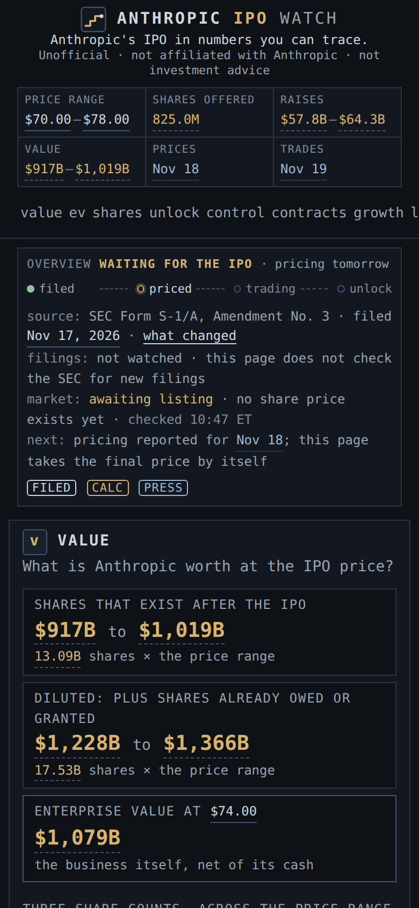
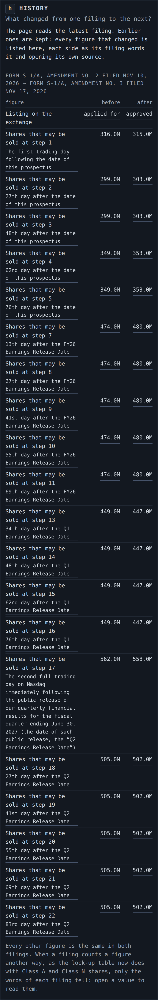
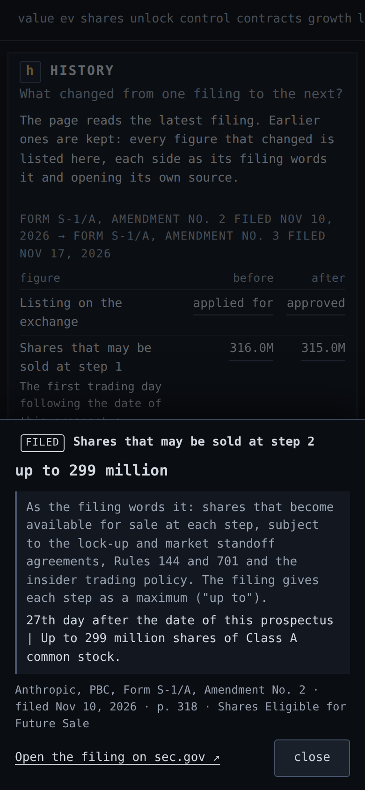
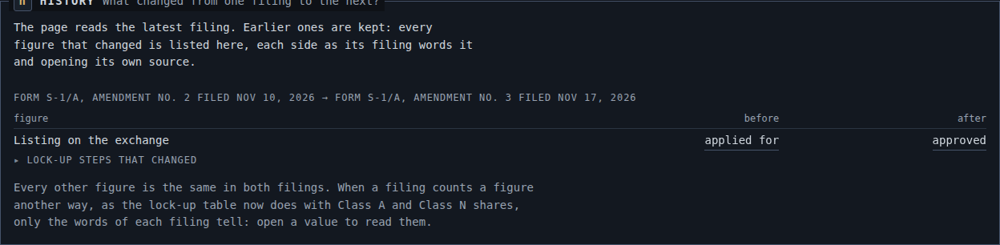

Loop 008 — Amendment No. 3, and versions you can see
2026-11-17 · The day before pricing, Anthropic filed Amendment No. 3. The page now reads it, and keeps the filing it replaced: the top says which filing and since when, and a HISTORY panel lists every figure that changed, each side opening its own source. Version 0.8.0.
Why
Are we up to date, or is there a new filing? [...] I saved the HTML file, tell me what's in it. [...] Yes, OK. And I'd like a small section at the top for versioning: a date at the top, instead of wiping and rewriting. I don't know if it's simple to do. [...] Yes, fold the steps, then deploy.
The owner's words, gathered from several messages and reworded in English.
What Amendment No. 3 changes
- Same price range ($70 to $78), same 825 million shares offered, same symbol.
- Nasdaq approved the listing ("We have been approved to list"), with a Form 8-A12B the same day.
- The lock-up table gives each step for Class A shares, Class N shares and their total; 20 of 23 steps moved by a few million shares. UNLOCK draws the total.
- Also in the filing, not on the page yet: stock-based compensation now estimated (about $3.5B and $3.0B at $74), and Amazon's and Google's holdings after the IPO.
What changed on the page




- Nothing wiped: earlier filings stay in
data/facts/history/, extracted by the same code. At the next filing, the current file moves there and HISTORY fills itself. - Both wordings read: the extractor knows the old and the new wording of three passages; tests extract both filings again and compare them with the committed files.
- A bug fixed: a list of filings older than the filing the page reads no longer shows earlier filings as new.
Checks
| Check | Result | Evidence |
|---|---|---|
| Unit tests, lint, types, secret scan | passed | 135 unit tests, four of them new (what changed, both sources, the panel, no panel without history). |
| 159 consistency checks on Amendment No. 3 | passed | No check changed. |
| Real-browser tests, local and against antipo.watch | passed | 14 and 14; the first-screen test passes. |
| Real use in Chromium at phone size | passed | Tapped "what changed", opened the folded steps, opened an earlier value: its card names Amendment No. 2, page 318. |
| The owner saw the screenshots before release | passed | "Yes, fold the steps, then deploy." |